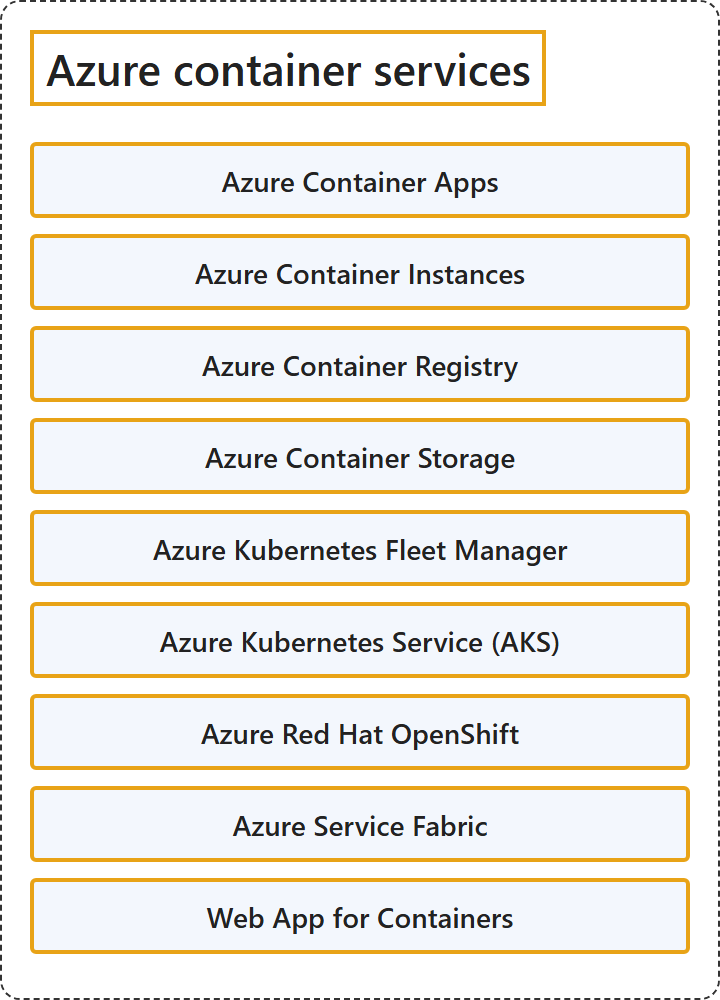

5.3 Azure Container Services
Classification

Glossary
| Term | Definition | 中文翻译 | Source |
|---|---|---|---|
| Azure Container Apps Azure 容器应用 |
"Azure Container Apps is a serverless platform for running containerized applications without managing the underlying infrastructure." | Azure 容器应用是一个无服务器平台，用于运行容器化应用程序，无需管理底层基础结构。 | Microsoft, 2026b, para. 1 |
| Azure Container Instances Azure 容器实例 |
"Azure Container Instances offers the fastest and simplest way to run Linux or Windows containers in Azure, without having to manage any virtual machines and without having to adopt a higher-level service." | Azure 容器实例提供在 Azure 中运行 Linux 或 Windows 容器的最快、最简单的方法，无需管理任何虚拟机，也无需采用更高级别的服务。 | Microsoft, 2026f, para. 1 |
| Azure Container Registry Azure 容器注册表 |
"Azure Container Registry is a managed registry service based on the open-source Docker platform." | Azure 容器注册表是一种托管的注册表服务，基于开源 Docker 平台。 | Microsoft, 2026d, para. 1 |
| Azure Container Storage Azure 容器存储 |
"Azure Container Storage is a cloud-based volume management, deployment, and orchestration service built for containers." | Azure 容器存储是一种基于云的卷管理、部署和编排服务，专为容器构建。 | Microsoft, 2026g, para. 1 |
| Azure Kubernetes Fleet Manager Azure Kubernetes 舰队管理器 |
"Azure Kubernetes Fleet Manager enables at-scale management of multiple supported Kubernetes clusters." | Azure Kubernetes 舰队管理器支持对多个受支持的 Kubernetes 群集进行大规模管理。 | Microsoft, 2026h, para. 1 |
| Azure Kubernetes Service (AKS) Azure Kubernetes 服务（AKS） |
"Azure Kubernetes Service (AKS) is a managed Kubernetes service for deploying and managing containerized applications." | Azure Kubernetes 服务（AKS）是一种托管的 Kubernetes 服务，用于部署和管理容器化应用程序。 | Microsoft, 2026i, para. 1 |
| Azure Red Hat OpenShift Azure Red Hat OpenShift |
"The Microsoft Azure Red Hat OpenShift service enables you to deploy fully managed OpenShift clusters on Azure." | Microsoft Azure Red Hat OpenShift 服务让你可以在 Azure 上部署完全托管的 OpenShift 群集。 | Microsoft, 2026c, para. 1 |
| Azure Service Fabric Azure Service Fabric |
"Azure Service Fabric is a distributed systems platform that makes it easy to package, deploy, and manage scalable and reliable microservices and containers." | Azure Service Fabric 是一个分布式系统平台，它让打包、部署和管理可扩展、可靠的微服务和容器变得容易。 | Microsoft, 2026e, para. 1 |
| Web App for Containers 用于容器的 Web 应用 |
(context) "Or, if your app is containerized, you can just deploy it as a custom container." | （语境）或者，如果你的应用已容器化，可以直接把它部署为自定义容器。 | Microsoft, 2026a, para. 2 |
References
- Microsoft. (n.d.). Azure documentation. Microsoft Learn. Retrieved October 27, 2026, from https://learn.microsoft.com/en-us/azure/
- Microsoft. (2026a, August 18). App Service overview. Microsoft Learn. https://learn.microsoft.com/en-us/azure/app-service/overview
- Microsoft. (2026b, July 7). Azure Container Apps overview. Microsoft Learn. https://learn.microsoft.com/en-us/azure/container-apps/overview
- Microsoft. (2026c, September 15). Azure Red Hat OpenShift. Microsoft Learn. https://learn.microsoft.com/en-us/azure/openshift/intro-openshift
- Microsoft. (2026d, February 11). Introduction to Azure Container Registry. Microsoft Learn. https://learn.microsoft.com/en-us/azure/container-registry/container-registry-intro
- Microsoft. (2026e, March 22). Overview of Azure Service Fabric. Microsoft Learn. https://learn.microsoft.com/en-us/azure/service-fabric/service-fabric-overview
- Microsoft. (2026f, July 25). What is Azure Container Instances? Microsoft Learn. https://learn.microsoft.com/en-us/azure/container-instances/container-instances-overview
- Microsoft. (2026g, February 5). What is Azure Container Storage? Microsoft Learn. https://learn.microsoft.com/en-us/azure/storage/container-storage/container-storage-introduction
- Microsoft. (2026h, June 15). What is Azure Kubernetes Fleet Manager? Microsoft Learn. https://learn.microsoft.com/en-us/azure/kubernetes-fleet/overview
- Microsoft. (2026i, June 4). What is Azure Kubernetes Service (AKS)? Microsoft Learn. https://learn.microsoft.com/en-us/azure/aks/what-is-aks